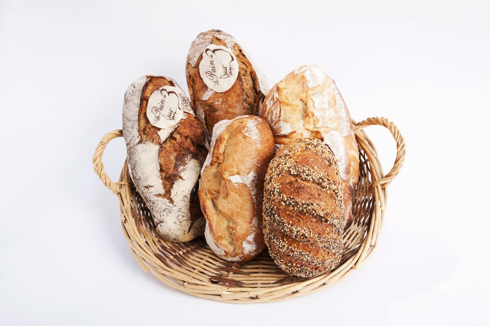
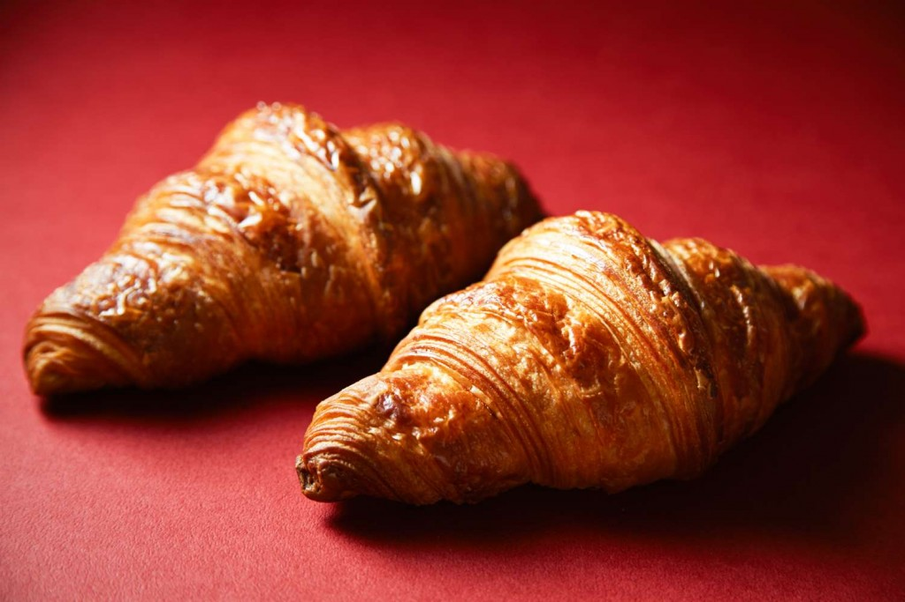
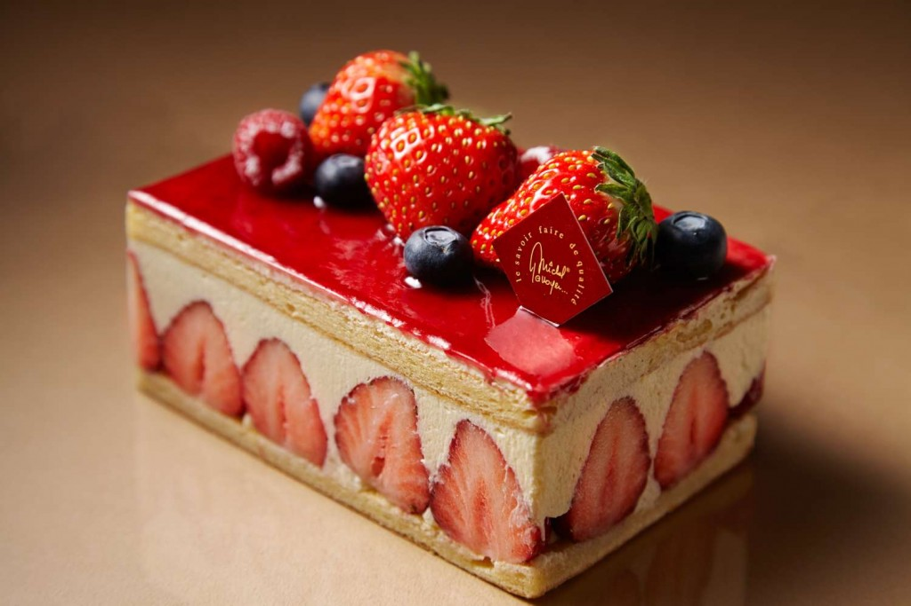

PAINS

Emanuelle propose un choix complet de 10 variétés de pains.
Pain complet, au levain, à l’abricot, aux noisettes,
aux figues et aux noix et les fougasses aux olives sont autant de régal pour la vue que pour vos papilles.
Sans oublier le Pain de 3 et surtout la fameuse «Baguette de tradition»
qui bénéficie chaque année de nombreux prix d’excellence au sein des différents Chez Emanuelle.
VIENNOISERIES

Aux traditionnels croissants et pains au chocolat pur beurre confectionnés chaque jour
à la main dans nos boulangeries viennent s’ajouter nos délicieux cakes ; au citron, au chocolat,
à la pistache et aux griottes.
Pour une petite faim, une gourmandise impromptue ou simplement pour le goûter,
Chez Emanuelle offre une farandole de douceurs sucrées. Venez découvrir nos délicieuses madeleines,
nos savoureux financiers et que vous pouvez déguster à n’importe quel moment de la journée.
PÂTISSERIES

Chez Emanuelle, même les pâtisseries ont leur collection !
Quatre fois par an, de nouvelles surprises sont au rendez-vous grâce aux fruits et saveurs des saisons.
Les traditionnels éclairs délicatement glacés, tartes Tatin, Paris-Brest,
clafoutis et créations pâtissières rivalisent de beauté.
Viennent également s’ajouter nos délicieuses tartes fines et autres créations
de nos talentueux pâtissiers.